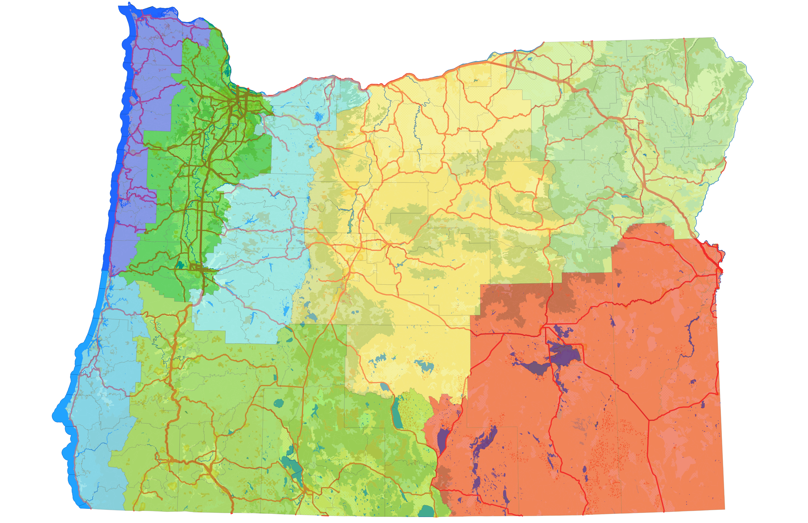

Willamette Valley
Farms, cities, parks and foothills

Northern Coast
Beaches, birds and the coast range

Cascades
Mountains, forests and waterfalls

Southern Coast
Lighthouses, harbors and inland forests

Southern Oregon
"The gateway to the Siskiyous" and Rogue Valley

Southeast Oregon
The high desert, clouds and birds

Central Oregon
Ponderosa, mountain ranges and the high desert